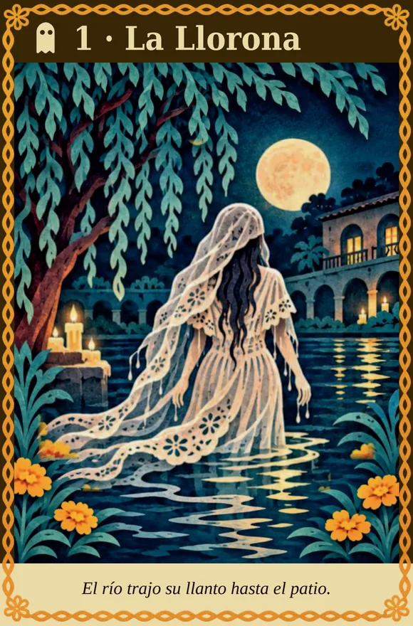

El juego
Lee la secuencia de la partida, las evidencias y las identidades.
Archivo de arte · Guía de colaboración
En una casona, la noche de Día de Muertos, una persona encarna al ánima y de una a cuatro investigan su identidad. Los investigadores reúnen evidencias con sus herramientas mientras el ánima los asusta y los caza.

El terror folclórico mexicano se cuenta con sombras, gestos y objetos familiares. El papel picado, el cempasúchil y las veladoras sitúan la escena. La inquietud nace de lo que se insinúa, sin violencia gráfica.
Jonathan dirige el proyecto y aprueba cada pieza de arte.
Lee la secuencia de la partida, las evidencias y las identidades.
Consulta los rasgos y las funciones de investigadores y roles.
Busca una carta, su reverso y sus datos de juego.
Consulta el encuadre, las medidas, el color y las referencias del mazo.
Identifica las evidencias y aprende a leer las bandas de acciones.
Encuentra las piezas que requieren ilustración o revisión.
Prepara tu entrega y consulta el proceso de revisión.
Obtén plantillas y referencias para trabajar a escala.
Consulta la procedencia de las piezas y su estado a lo largo del proyecto.
Preprensa · Edición de 150 cartas
Corte de 58 × 88 mm, 3 mm de sangrado por lado y CMYK FOGRA39 como perfil de prueba.